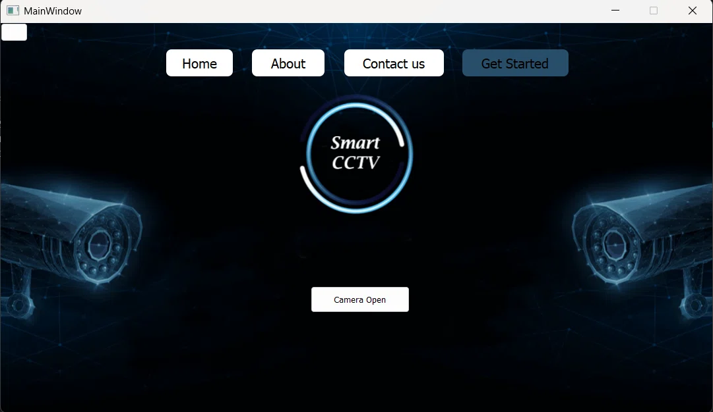

An AI-powered desktop surveillance application built with PyQt5 and YOLOv11. It detects firearms in live CCTV feeds, instantly captures forensic evidence (screenshots/videos), and automates emergency email alerts to security teams reducing response time from minutes to milliseconds.

In high-stakes security environments, every millisecond counts. Manual video monitoring is prone to human error and often results in delayed threat response. To solve this, I developed VisionGuard, a robust desktop application that bridges the gap between Artificial Intelligence and physical security operations. The application utilizes a custom-trained YOLOv11 deep learning model, achieving high-precision firearm detection. Built with PyQt5 for a seamless user interface, it integrates directly with local CCTV cameras. Upon detecting a threat, the system operates autonomously: it captures a high-resolution screenshot for immediate visual confirmation, records a critical 5-second video clip of the incident for contextual evidence, and stores this data securely in local folders. Crucially, the application triggers an automated email protocol, ensuring that security administrators are notified instantly, even if they are away from the surveillance station. This project demonstrates my ability to merge complex computer vision pipelines with user-centric desktop software, resulting in an industry-grade security solution that saves lives and mitigates risk.